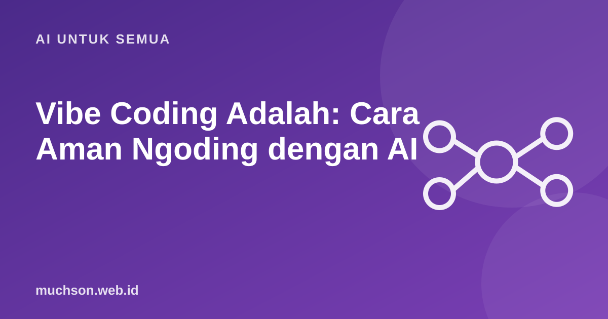

Anda menjelaskan aplikasi yang diinginkan dalam bahasa sehari-hari, AI menulis kodenya, Anda mencoba hasilnya lalu meminta perbaikan. Itulah vibe coding. Cepat dan menyenangkan, tetapi hasilnya hanya sebaik kebiasaan memeriksa Anda.
Oleh Muhammad Muchson Attoyibi··1 menit baca

Alur kerja vibe coding
Siklus pendek dan berulang. Semakin kecil langkahnya, semakin mudah diperiksa.
Di mana risikonya
Kode dari AI sering tampak benar tetapi menyimpan celah: validasi input yang lemah, kunci rahasia tertulis di kode, penanganan error yang menelan kesalahan, atau pustaka yang tidak ada. Survei developer yang banyak dikutip melaporkan bahwa banyak pengguna menilai hasil AI "hampir benar tetapi belum tepat" dan tingkat kepercayaannya rendah. Kecepatan menulis naik, beban memeriksa ikut naik.
Kebiasaan yang membuatnya aman
Prompt yang lebih baik untuk coding
Kapan cocok
Untuk prototipe, alat internal, dan belajar, vibe coding sangat berguna. Untuk produk yang dipakai banyak orang dan menyangkut data sensitif, pakai AI sebagai asisten lalu tinjau seperti Anda meninjau kode rekan kerja.
Tanya jawab
Apakah vibe coding menggantikan programmer?
Tidak. Ia mempercepat penulisan, sementara merancang, memeriksa, dan bertanggung jawab tetap pekerjaan manusia.
Bisakah pemula membuat aplikasi dengan vibe coding?
Bisa untuk proyek kecil. Memahami dasar HTML, JavaScript atau Python membantu Anda menilai hasilnya.
Bagaimana menjaga keamanan?
Jangan memasukkan rahasia ke kode, periksa input pengguna, perbarui dependensi, dan tinjau bagian sensitif.
Bagikan:
Muhammad Muchson AttoyibiSoftware Engineer dan Academic Trainer di Malang. Menulis tentang teknologi, belajar, dan hal praktis sehari-hari. Tentang saya